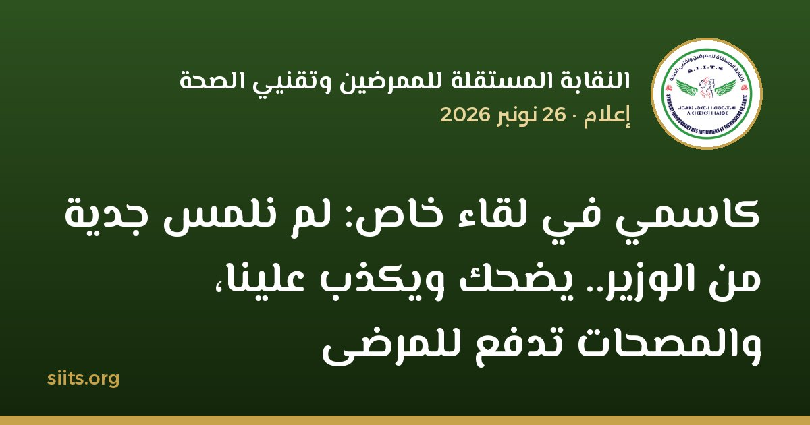

كاسمي في لقاء خاص: لم نلمس جدية من الوزير.. يضحك ويكذب علينا، والمصحات تدفع للمرضى

في لقاء خاص، حلّ الأخ حسن الكاسمي، عضو المكتب الوطني والكاتب الجهوي للنقابة المستقلة للممرضين وتقنيي الصحة بجهة الشرق، ضيفاً للحديث عن مآلات الحوار مع وزارة الصحة والحماية الاجتماعية وأوضاع الشغيلة التمريضية.
وأكد الأخ الكاسمي أن النقابة لم تلمس أي جدية من الوزير في التعاطي مع الملف المطلبي للممرضين وتقنيي الصحة، معتبراً أن الوعود المتكررة لم تجد طريقها إلى التنفيذ، كما توقف عند ما يجري في القطاع الخاص، حيث «المصحات تدفع للمرضى».
ويأتي هذا اللقاء في سياق التعبئة للإنزال الوطني الذي دعا إليه المكتب الوطني يوم السبت 5 دجنبر 2026 ابتداءً من الساعة 11:00 صباحاً أمام وزارة الصحة والحماية الاجتماعية بالرباط، دفاعاً عن مركزية المناصب المالية وتنزيل اتفاق يوليوز 2024 بجميع تفاصيله.
شاهدوا اللقاء كاملاً على يوتيوب.
فتح في تطبيق النقابة